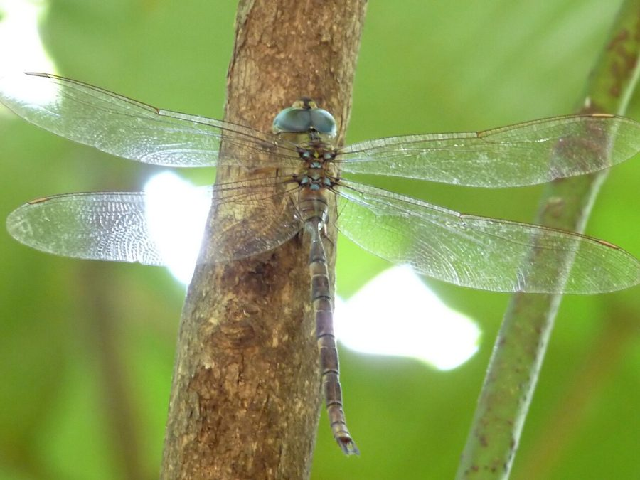

ब्राउन डस्क हॉकर व्याध पतंगBrown Dusk Hawker
Gynacantha dravida · Aeshnidae · INS-0214

- Scientific name वैज्ञानिक नाम
- Gynacantha dravida Lieftinck, 1960
- Family कुल
- Aeshnidae
- Hindi हिंदी
- ब्राउन डस्क हॉकर व्याध पतंग
- Local names स्थानीय नाम
- brown dusk hawker, brown dusk hawker dragonfly, dusk hawker, bhura hawker
- Status here यहाँ की स्थिति
- native
- Movement आवागमन
- Resident, here all year
- Known from कहाँ दर्ज
- Others have published records from the Basti–Ayodhya districts बस्ती–अयोध्या के ज़िलों से दूसरों के प्रकाशित अभिलेख
- IUCN IUCN
- not evaluated
- Review समीक्षा
- not yet reviewed
When to look कब देखें
Present all year. साल भर मौजूद।
Uses and possibilities उपयोग और संभावनाएँ
Drawn from the documented uses in the profile below, where each is labelled traditional, current or a research lead. All uses →
Tell it apart from इनसे अलग पहचानें
ब्राउन डस्क हॉकर व्याध पतंग / Brown Dusk Hawker
Gynacantha dravida Lieftinck, 1960 — Aeshnidae
ब्राउन डस्क हॉकर व्याध पतंग — शाम के धुंधलके में उड़ने वाली भारत की बहुत बड़ी, ताकतवर और लंबी व्याध पतंग (dragonfly) है। इसका शरीर गहरा भूरा और जैतून जैसे हरे रंग का होता है, इसकी आँखें बहुत बड़ी और चमकदार नीली-हरी होती हैं और इसका पेट बहुत लंबा होता है। दिन भर यह घने बांसों या पेड़ों के अंधेरे में उल्टी लटककर सोती है, और सूरज ढलते ही पानी के ऊपर उड़ने वाले मच्छरों और कीटों का तूफानी गति से शिकार करती है।
Quick Identification त्वरित पहचान
| Feature | Description |
|---|---|
| Size | Very large, robust hawker; abdomen 48–54 mm, hindwing 44–48 mm (Subramanian 2005) |
| Compound Eyes | Gigantic, meeting along an extensive seam; glowing sapphire-blue and emerald-green in life (Fraser 1936) |
| Thorax | Warm olivaceous-green marked with subtle dark brown lateral sutures (Subramanian 2005) |
| Abdomen | Long, cylindrical, dark reddish-brown marked with bright blue and green dorsal spots (Fraser 1936) |
| Wings | Long, narrow, hyaline, washed with a delicate golden-amber tint in mature adults (Fraser 1936) |
| Pterostigma | Long, narrow, bright yellowish-brown to dark reddish-brown (Subramanian 2005) |
| Flight Habits | Strictly crepuscular; hawks swiftly at dusk and dawn, hanging vertically in shade by day |
Field tip: Watch quiet village tanks or bamboo-lined irrigation pools right at sunset. A very large, long-bodied dragonfly with luminous blue-green eyes hurtling back and forth through the twilight air at astounding speed, chasing swarming mosquitoes, is the Brown Dusk Hawker.
हिंदी: शाम के समय तालाबों पर बहुत तेजी से उड़ने वाली इस विशाल पतंग की आँखें नीली-हरी चमकती हैं और इसका लंबा शरीर गहरा भूरा होता है। दिन में यह बांस की छाया में उल्टी लटकी रहती है।
Morphology आकारिकी
Measurements as given in the handbooks (Subramanian 2005; Fraser 1936):
| Measurement | Range | Source |
|---|---|---|
| Abdomen length | 48–54 mm | Subramanian (2005) |
| Hindwing length | 44–48 mm | Subramanian (2005) |
Adult description:
Gynacantha dravida is a massive aeshnid dragonfly built for rapid, sustained flight in low light (Fraser 1936). The head is broad and dominated by gigantic compound eyes that meet broadly across the top of the head; in living adults, they are brilliant sapphire-blue above, blending into emerald-green and pale yellow beneath (Subramanian 2005). The frons is pale olivaceous-green, marked on its upper surface with a distinct black T-shaped mark (Fraser 1936). The synthorax is robust, grass-green to olivaceous-brown, clothed in fine silky hairs, and unmarked by bold stripes (Subramanian 2005).
The abdomen is exceptionally long, slender, and cylindrical: segment 1 is swollen and green; segment 2 is conspicuously dilated, bearing bright azure-blue lateral spots and pale green dorsal lunules; segment 3 is strongly constricted at the base into a narrow waist before expanding evenly; segments 4 through 10 are dark reddish-brown to blackish, adorned with paired blue or green postmedian spots (Fraser 1936). The superior anal appendages in males are long, lanceolate, and straight (Lieftinck 1960).
Females resemble males in size and markings, but have a slightly stouter abdomen, warm amber-washed wings, and bear a prominent, two-pronged (forked) dentigerous plate under segment 10 that assists in soil oviposition (Fraser 1936). In both sexes, the wings are long, narrow, and hyaline, with dense reticulation and an elongate, yellowish-brown pterostigma (Subramanian 2005).
Larval Stage निम्फ अवस्था
The aquatic naiad is extraordinarily large, elongate, and dark brownish-grey, possessing an aggressive demeanor. The head is flat with prominent compound eyes; the prementum (mask) is very long, flat, and armed with sharp raptorial hooks capable of seizing small fish and tadpoles.
हिंदी: नर का पेट 48 से 54 मिमी लंबा होता है। इसका सीना हरा और पेट भूरा-काला होता है जिस पर नीले निशान होते हैं। इसकी विशाल आँखें नीली-हरी होती हैं। इसका जलीय निम्फ बहुत बड़ा और आक्रामक होता है।
Behaviour & Ecology व्यवहार और पारिस्थितिकी
The Brown Dusk Hawker is a dedicated crepuscular predator occupying an aerial niche distinct from diurnal dragonflies (Subramanian 2005). During daylight hours, adults remain completely inactive, roosting vertically suspended beneath broad leaves, dense bamboo thickets, or inside dark, humid village outhouses and cattle sheds (Fraser 1936). If disturbed during the day, they fly with a loud rustle before settling deeper into dark foliage.
As darkness falls at sunset, individuals suddenly launch into the air and congregate over water bodies, garden glades, and village lanes (Subramanian 2005). Their flight is among the swiftest of any odonate—a whirlwind of high-speed sweeps and abrupt directional shifts, hawking down swarming mosquitoes and moths in near-total darkness (Fraser 1936). Mating pairs fly in tandem wheel formation high in the canopy at dusk. Oviposition is endophytic: the female uses her sharp forked dentigerous plate to drill clutches of eggs into wet, muddy banks and rotting leaf litter just above the water line, an adaptation for seasonal water fluctuations.
हिंदी: यह दिन भर घने अंधेरे में उल्टी लटककर सोती है और शाम ढलते ही बहुत तेज गति से उड़ती है। पानी के किनारे की गीली मिट्टी में मादा अपने मजबूत डंक से छेद करके अंडे देती है।
Life Cycle / Phenology जीवन चक्र
Seasonal phenology in northern Indian alluvial wetlands across the agricultural year (Fraser 1936; Subramanian 2005):
| Season / Month | Stage | Field Observation |
|---|---|---|
| July–September (Kharif monsoon) | Adult peak & breeding | Mass emergence; large dusk hunting flights over flooded village tanks (Subramanian 2005) |
| October–November (Post-monsoon) | High adult activity | Adults frequenting orchard margins and canal corridors at twilight |
| December–January (Rabi winter) | Naiad development | Large aquatic nymphs feed voraciously in permanent water bodies |
| February–April (Spring / Zaid) | Adult emergence | Spring brood emerges; active at dusk near shaded garden tanks (Fraser 1936) |
| May–June (Pre-monsoon summer) | Drought refuge | Persists in shaded deep village kunds and forest water holes (Subramanian 2005) |
Females insert eggs into moist, decaying organic mud and wet wood above the water line in shaded ponds. When seasonal monsoon rains raise the water level, the submerged eggs hatch after a few days into predatory nymphs. Naiads develop over several weeks through multiple instars, growing into formidable aquatic predators. At maturity, the nymph crawls out of the water onto an overhanging tree trunk or bamboo pole at dusk to metamorphose into an adult hawker.
हिंदी: मादा पानी के किनारे की गीली मिट्टी में अंडे देती है। बारिश का पानी बढ़ने पर अंडे फूटते हैं और पानी की तली में रहने वाला विशाल निम्फ कुछ ही हफ्तों में बड़ा होकर पेड़ पर चढ़कर पतंग बन जाता है।
Host Plants or Prey आहार
Gynacantha dravida is an apex aerial predator of crepuscular and nocturnal flying insects (Subramanian 2005):
Adult diet:
- Swarming crepuscular mosquitoes, including Culex quinquefasciatus (Southern House Mosquito) and Culex tritaeniorhynchus (Rice-field Mosquito).
- Night-flying agricultural moths, including armyworm moths, cutworm moths, and pyralid leaf-folders.
- Winged termites, flying ants, midges (Chironomidae), and small beetles emerging at dusk.
Larval diet:
- Mosquito wrigglers, chironomid bloodworms, water boatmen, small freshwater shrimps, and amphibian tadpoles.
हिंदी: यह विशाल पतंग शाम को निकलने वाले मच्छरों, फसलों को नुकसान पहुँचाने वाले पतंगों और बारिश के बाद उड़ने वाली दीमकों का भारी शिकार करती है। इसका निम्फ पानी के छोटे जीवों को खाता है।
Predators / Natural Enemies शत्रु
Natural predators documented in Gangetic plain freshwater ecosystems:
- Bats: Large insectivorous bats (such as false vampires and pipistrelles) sharing twilight airspace compete with and occasionally capture flying hawkers.
- Owls: Spotted owlets and barn owls hunt large flying insects over village water bodies at dusk.
- Predatory fish: Murrels and large catfishes feed on developing naiads in muddy ponds.
- Spiders: Large wetland orb-weavers occasionally snare adults flying through shoreline trees.
हिंदी: शाम को उड़ने वाले चमगादड़ और उल्लू इस बड़ी पतंग का शिकार कर सकते हैं, जबकि पानी के अंदर बड़ी मछलियाँ इसके निम्फ को खा जाती हैं।
Agricultural / Human Relevance कृषि प्रासंगिकता
Major natural suppressor of crop moths and mosquitoes: The Brown Dusk Hawker provides an exceptional ecosystem service in rural agricultural landscapes of eastern Uttar Pradesh (Subramanian 2005). Because its hunting flights occur precisely during the evening twilight window when major crop pests—such as noctuid moths, leaf-folders, and planthoppers—disperse between fields, it acts as an intensive natural biocontrol predator.
Public health benefit: By devouring hundreds of crepuscular biting mosquitoes (Culex and Anopheles) each evening, it helps protect village populations from malaria, filariasis, and Japanese encephalitis (Subramanian 2005).
Traditional: No traditional medicinal, economic, or cultural uses are recorded.
Today: Highly regarded by entomologists as one of the most powerful and impressive crepuscular predators in South Asia.
Research direction (a lead, not a result): Investigating the low-light visual acuity and motion-tracking neural circuits of Gynacantha compound eyes.
हिंदी: यह पतंग ग्रामीण स्वास्थ्य और खेती दोनों के लिए एक वरदान है। यह शाम को फसलों पर हमला करने वाले हानिकारक पतंगों और बीमारी फैलाने वाले मच्छरों को भारी संख्या में चट कर जाती है।
Expected Locally स्थानीय रूप से अपेक्षित
Not a field record. Written from published accounts for eastern Uttar Pradesh. No confirmed local sighting yet — if you have seen it, that is what the atlas needs.
अभी तक स्थानीय पुष्टि नहीं। यह विवरण प्रकाशित स्रोतों से है, किसी अवलोकन से नहीं।
The Brown Dusk Hawker is expected across eastern Uttar Pradesh around shaded village ponds, temple tanks, and bamboo groves near watercourses. Look low over the water surface during the twenty to thirty minutes immediately following sunset from July through November. GBIF holds published records from these districts. A photograph taken under flash showing the large brown-and-green body, long abdomen, and blue-green eyes, submitted through the About page, would confirm the first local documentation for the district.
Distribution वितरण
Global range: Confined to South Asia, occurring widely across India, Sri Lanka, Nepal, and Bangladesh (Fraser 1936; Lieftinck 1960).
In India: Recorded throughout peninsular India, the Western and Eastern Ghats, central India, and across the Gangetic alluvial plains to Assam and West Bengal (Prasad & Varshney 1995; Mitra 2002).
In Uttar Pradesh: Recorded from forested wetlands, rural temple tanks, and agricultural floodplains throughout central and eastern districts.
In Basti district / eastern UP: Expected as a resident breeding dragonfly in perennial village ponds and shaded bamboo-lined water bodies.
हिंदी: यह भारत और पड़ोसी देशों में पाई जाती है। उत्तर प्रदेश के उन सभी गावों में जहाँ पुराने छायादार तालाब और बांस की झाड़ियाँ हैं, यह मौजूद रहती है।
Research Questions शोध प्रश्न
- How many adult noctuid moths and culicine mosquitoes does a single Gynacantha dravida consume during its evening foraging bout? / शाम के शिकार में यह पतंग कितने हानिकारक पतंगों और मच्छरों को खाती है?
- What are the specific soil moisture thresholds required for female oviposition in pond bank mud?
- How do bright mercury-vapour and LED streetlights in rural villages disorient crepuscular Gynacantha flight? / बिजली की लाइटों का इस पतंग के रात के शिकार पर क्या असर पड़ता है?
- What proportion of the diet of aquatic naiads in rural ponds consists of Japanese encephalitis vector larvae?
- Can local youth use evening phone flash photography to document adult dusk hawkers without disturbing roosting sites?
Similar Species मिलती-जुलती प्रजातियाँ
| Species | How to tell apart | हिंदी | |
|---|---|---|---|
| Zyxomma petiolatum ([[brown_dusk_hawk_dragonfly\ | Brown Dusk Hawk Dragonfly]]) | Noticeably smaller; abdomen deeply petiolate (waisted); wings carry small dark brown basal spots | ब्राउन डस्क हॉक — पतली कमर वाली छोटी भूरी पतंग |
| Anax guttatus ([[lesser_emperor\ | Lesser Emperor]]) | Diurnal flyer in open sunshine; bright grass-green thorax and sky-blue patch on abdominal segment 2 | राजा व्याधपतंग — दिन में उड़ने वाली हरी-नीली पतंग |
| Pantala flavescens ([[wandering_glider\ | Wandering Glider]]) | Bright yellowish-orange body; diurnal glider; completely lacks long cylindrical abdomen and T-mark | सुनहरी व्याधपतंग — दिन में उड़ने वाली पीली पतंग |
Field rule: A very large, long-bodied dragonfly with a black T-shaped mark on the frons and glowing sapphire-green eyes, flying with astounding speed over water strictly at dusk, is the Brown Dusk Hawker.
हिंदी: ब्राउन डस्क हॉक आकार में छोटी और पतली कमर वाली होती है, जबकि ब्राउन डस्क हॉकर बहुत विशाल होती है और शाम के अंधेरे में तूफानी गति से उड़ती है।
Taxonomy & Classification वर्गीकरण
Original description. Described by Maurits Anne Lieftinck in 1960 as Gynacantha dravida in Nova Guinea (Zoology), 5, page 252. Type locality: "India".
Subspecies. Monotypic — no subspecies are currently recognized across its South Asian distribution.
Family and order placement. Order Odonata, suborder Anisoptera, family Aeshnidae. The genus Gynacantha Rambur, 1842, comprises dusk hawkers characterized by crepuscular habits, long petiolate abdomens, and female forked dentigerous plates.
Phylogenetic notes. Gynacantha dravida was historically confused with the Southeast Asian Gynacantha hyalina Selys, 1882, until Lieftinck (1960) demonstrated that peninsular and northern Indian populations represent a distinct biological species based on male anal appendage anatomy (Subramanian 2005).
IUCN status rationale. Not evaluated (NE) on the global IUCN Red List of Threatened Species. It is an abundant, secure, and widely distributed native species across South Asian freshwater ecosystems.
हिंदी: इसका वैज्ञानिक नाम Gynacantha dravida है और यह Aeshnidae परिवार की सदस्य है। प्रकृति में इसका वास पूरी तरह सुरक्षित है।
Photo Gallery फोटो गैलरी
No photos yet — add field photos to media/species/brown_dusk_hawker/ and run node scripts/sync_photos.js.
Photos needed आवश्यक फोटो
- [ ] Adult hanging vertically from shaded twig during daytime (दिन में छायादार टहनी पर लटकी पतंग)
- [ ] Close-up of glowing blue-green eyes and black T-shaped frons mark (सिर पर बने टी-निशान की तस्वीर)
- [ ] Adult in flight over pond at dusk under flash photography (शाम के समय पानी पर उड़ती पतंग)
- [ ] Aquatic nymph from bottom mud of village tank (तालाब की तली का विशाल लार्वा)
References संदर्भ
- Lieftinck, M. A. (1960). On the New Guinea species of Ischnura Charpentier and Oreagrion Ris, with special reference to the larval forms and notes on the Indian Gynacantha. Nova Guinea (Zoology), 5: 227–273 [p. 252].
- Fraser, F. C. (1936). The Fauna of British India, Including Ceylon and Burma. Odonata, Vol. 3. Taylor and Francis, London, pp. 97–100.
- Subramanian, K. A. (2005). Dragonflies and Damselflies of Peninsular India — A Field Guide. E-book of Project Lifescape, Centre for Ecological Sciences, Indian Institute of Science and Indian Academy of Sciences, Bangalore, p. 41.
- Prasad, M. & Varshney, R. K. (1995). A check-list of the Odonata of India including data on larval studies. Oriental Insects, 29(1): 385–428.
- Mitra, T. R. (2002). Geographical distribution of Odonata (Insecta) of Eastern India. Memoirs of the Zoological Survey of India, 19(1): 1–208.
- GBIF Occurrence Data — Gynacantha dravida, India (2025).
Source file: species/fauna/insects/brown_dusk_hawker.md